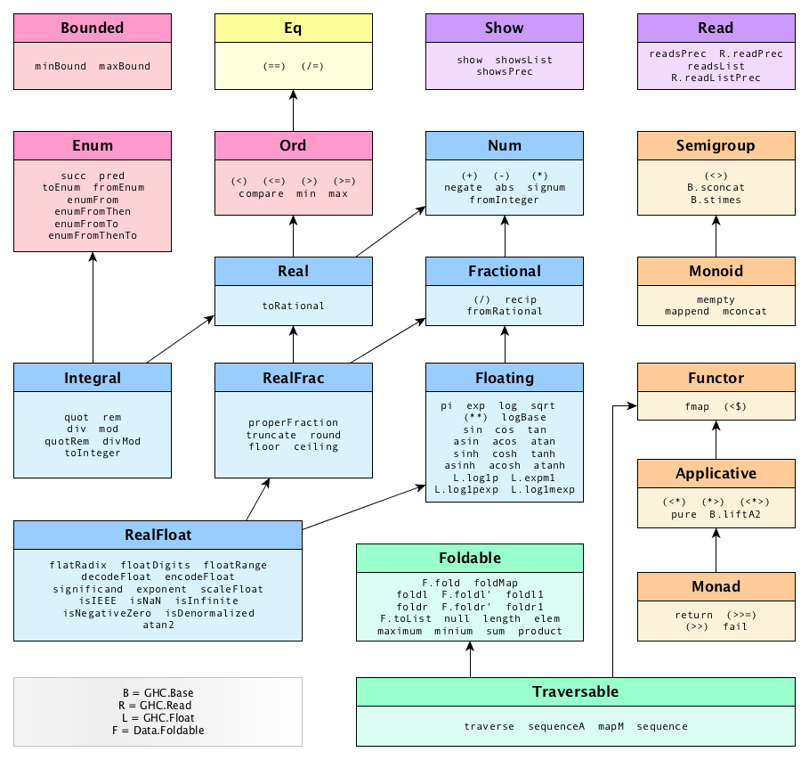
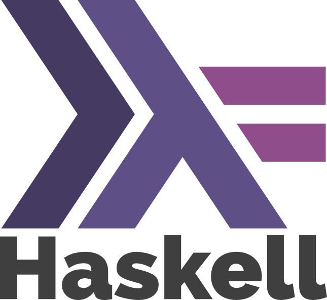
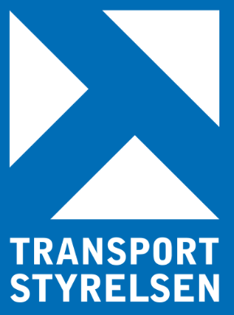
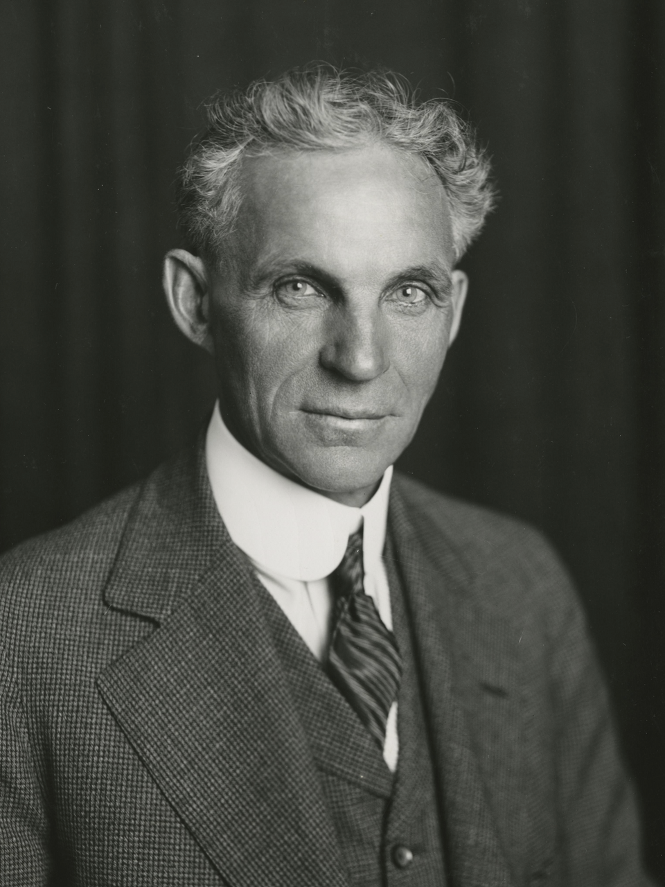
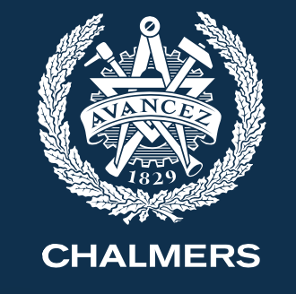

Skaparen av Haskell
Länge har mänskligheten funderat, vem var det egentligen som skapade Haskell? Haskell som vi alla vet, är ett funktionellt monad-orienterat programmeringsspråk, som lägger stor vikt vid att även det simplaste programmet ska kräva en master inom både matematik, datavetenskap och filosofi. Vem som skulle kunna vara diaboliskt kreativt galen nog att skapa ett sådant språk har därför länge varit okänt för mänskligheten. I denna forskningsartikel kommer jag reda ut detta en gång för alla.
Chalmers indoktrinering
Medan många rimliga universitet introducerar sina ingenjörer till programmering i trevliga språk som Python, Java och c/c++ har andra valt en annan väg. Linköpings Universitet exempelvis indoktrinerar en stor skala ingenjörer i konsten av Ada då SAAB i hemlighet mutar LiU med miljontals dollar varje år för att de behöver ingenjörer som kan läsa deras legacy kod. Men ännu mer bisarrt är Chalmers val av första språk, inget mindre än Haskell. Det är alldeles uppenbart att Chalmers försöker drilla göteborgsbarnen till excellenta haskllare, men frågan är bara varför Chalmers är så måna om att ingenjörer ska kunna hasklla? Vad är det Chalmers döljer för oss?

Transportstyrelsens inblandning
Efter en noggrann analys av logotyperna för Transportstyrelsens (TS) samt Haskells loggor är det uppenbart att dessa 2 entiteter är närmare besläktade än vi tidigare trott (se bilaga 67). Men anledningen till detta blir snabbt uppenbar när vi börjar granska bevisen i mer detalj. TS har länge jobbat för Trafikverket men har under den senaste tiden fått allt högre krav när det kommer till klimatmålen. Detta gjorde onekligen utvecklarna på myndigheten mycket oroliga, då det fram tills nu skrivit sina program i C# på svenska. C#, som vi alla vet, har ett koldioxidindex på 3,14 som inte görs bättre av att kod skriven på svenska har en multiplicitetsfaktorsskalärinversortogonalskomponentsinpliciteringsfakultetskonstant på 915. Detta har alltså gjort att varje rad kod skriven på TS har släppt ut totalt 11 ton koldioxid. Men ledningen på TS upptäckte då något kritiskt. For-loopar och abstrakta factory factory klasser generera höga halter metan, en väldigt potent växthusgas. Men använder man istället monader och functorer minskar utsläppen drastiskt då dessa enbart släpper ut divätemonoxid. Det är just därför som TS valde att skapa Haskell. Enbart för själviska syften att minska sina egna klimatutsläpp, utan att tänka på konsekvenserna för de stackars programmerarna.


Den fullständiga tidslinjen
Henry Ford
1903

Transportstyrelsen
1914
Chalmers
1829

KTH
Sommaren 1969
Akademiska Hus
1993

Staketet
2025
Med en så tydlig tidslinje beskriven blir nu många saker tydliga. Dels kan vi fastslå att TS och Chalmers jobbat tätt sedan starten för att introducera Haskell som ett verktyg för att slutföra sina mer sluga planer. Samarbetet mellan Chalmers och KTH för att förgöra LiU med hjälp av ett staket är inte särskilt häpnadsväckande utan har länge varit välkänt inom vetenskapen. Det som är riktigt intressant här är att vi äntligen kan fastslå hur Henry Ford är inblandad i det hela. Som vi tydligt ser planerade Henry Ford att sätta upp staketet på LiU över hundra år innan det faktiskt gjordes. Han planerade väl och försökte dölja sina spår med båda Akademiska Hus och Haskell, men efter mycket letande är det ändå självklart. Det var Henry Ford som satte upp staketet.